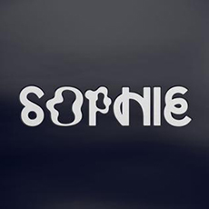

PRODUCT
In September 2015, Sophie's debut album Product was made available for preorder. The eight tracks listed were the four Numbers singles from 2013 and 2014, as well as four new tracks: "MSMSMSM", "Vyzee", "L.O.V.E.", and "Just Like We Never Said Goodbye". "MSMSMSM" was released on 29 September, and "Just Like We Never Said Goodbye" followed on 15 October. The album was made available in "silicon bubble cases", and its release coincides with the launch of a line of apparel[a] and a "silicon product" resembling a sex toy. On 25 September 2019, Numbers announced that the album was being re-released in limited quantities in its original format of four vinyl singles, each in a PVC case.
Product received positive reviews, The review aggregator website Metacritic gave the album an average score of 74 out of 100, which indicates "generally favourable reviews". Exclaim! senior editor Stephen Carlick called the record "a snapshot of an exciting artist whose tightrope walk between sweet and scary, pop and avant-garde, has yielded some of the best singles of the past few years."
OIL OF EVERY PEARL'S UN-INSIDES
Oil of Every Pearl's Un-Insides (stylized in all caps) is the only studio album by Scottish recording artist and producer Sophie. It was released on 15 June 2018, through Transgressive, Future Classic and Sophie's own label, MSMSMSM. The title may be a mondegreen of the phrase "I love every person's insides". The album was met with widespread acclaim by critics and received a nomination for the Best Dance/Electronic Album at the 61st Annual Grammy Awards. A remix album, Oil of Every Pearl's Un-Insides Non-Stop Remix Album, was released in July 2019.
In promotion of the album three singles were released off the album—"It's Okay to Cry", "Ponyboy", and "Faceshopping". The first single, "It's Okay to Cry", was released alongside a self-directed music video of Sophie, naked, singing directly to the camera in a studio setting behind digital skies and rainbow. The video marked Sophie's "first proper public appearance".